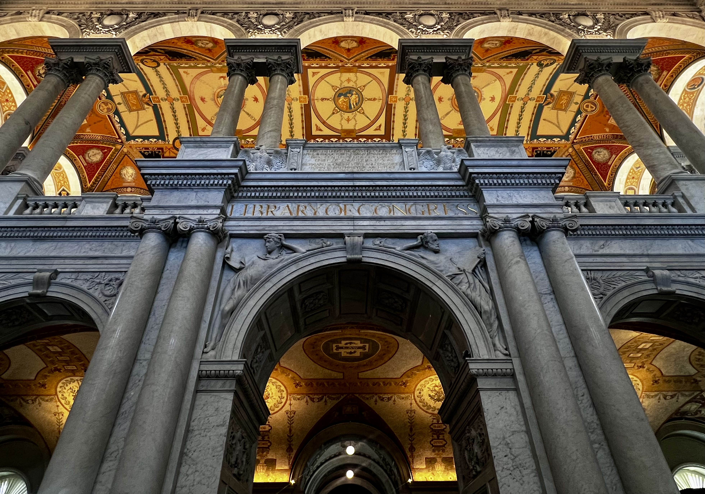
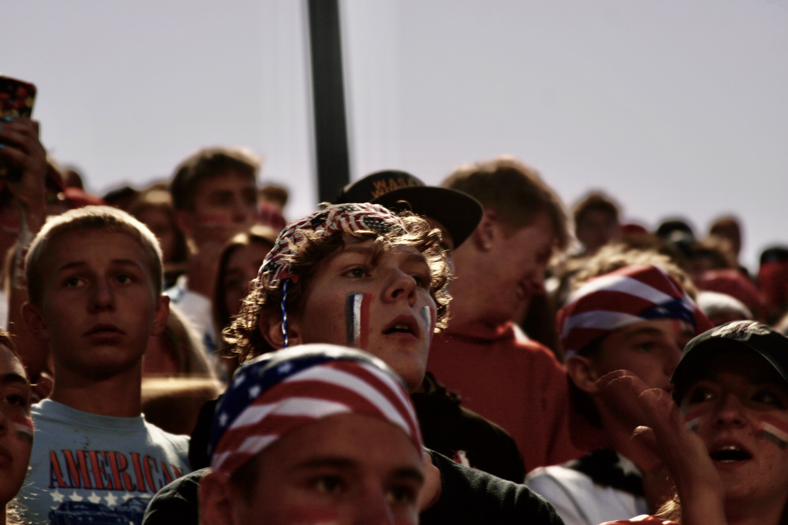
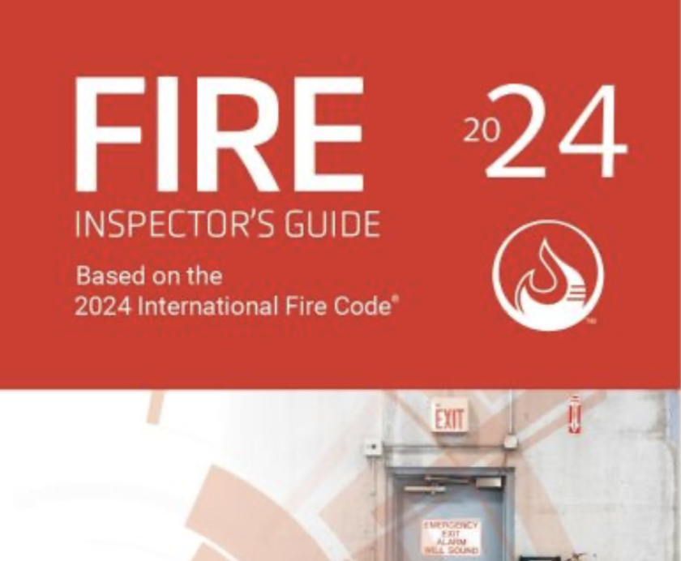
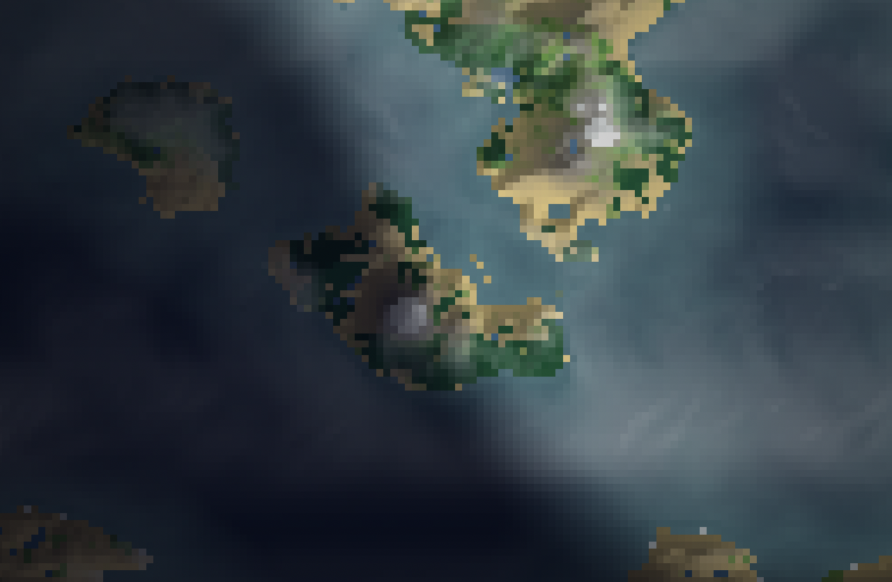
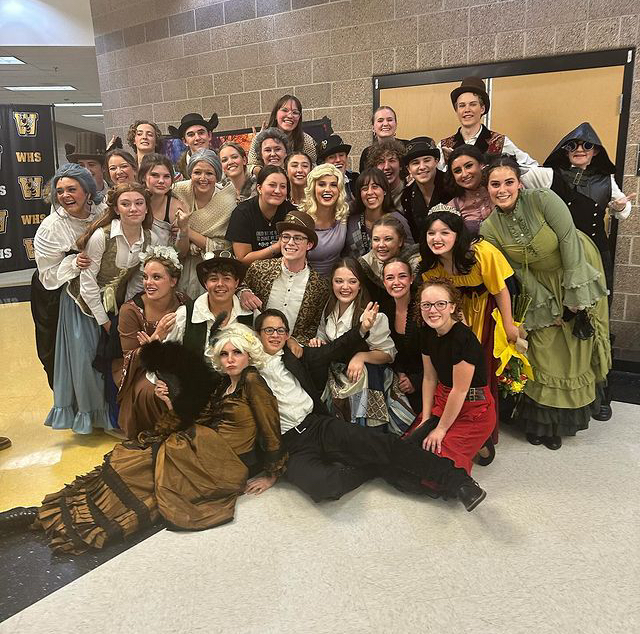
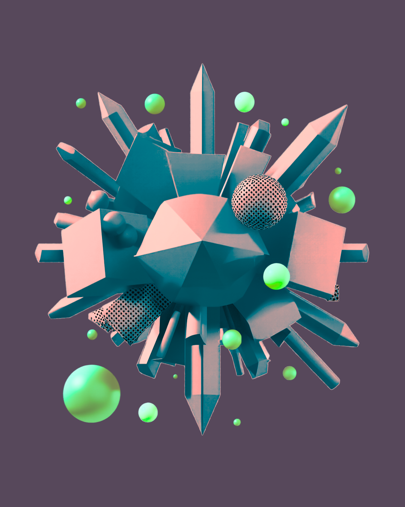

PHOTOGRAPHY
Photography
Three years of photography covering sports, portraits, events, and community work, from planning and shooting through image selection and editing.
View gallery →EDITOR • DESIGNER • RESEARCHER • CREATOR
Philosophy student, editor, photographer, designer, and general maker of things. I like complicated projects, learning how things work, and turning ideas into something people can actually use.
SELECTED WORK

PHOTOGRAPHY
Three years of photography covering sports, portraits, events, and community work, from planning and shooting through image selection and editing.
View gallery →
EDITORIAL • DESIGN
Editorial and visual direction for a 14-person yearbook team, including editing, photography, page layouts, visual standards, and deadline management.
View project →
EDITING • RESEARCH
Technical editing and fact-checking for the 2024 Fire Inspector's Guide, including grammar, accuracy, references, and cross-checking against authoritative code material.
View project →
DIGITAL • DEVELOPMENT
An independent interactive software project exploring simulated worlds and autonomous digital characters.
View project →
DIRECTION • PRODUCTION
Creative and production work across theater, including directing three productions, stage managing two, set and costume work, and participating in twelve productions and competitions
View project →
GRAPHIC DESIGN
Graphic design, illustration, painting, photography, glasswork, and other visual projects exploring different materials, styles, and techniques.
View project →ABOUT ME
I'm a philosophy student at Utah State University with a habit of turning whatever I'm interested in into a project. I've worked in technical editing, photography, graphic design, theater, coding, research, and visual media. I like learning complicated things, figuring out how they work, and making something useful or interesting out of them.
My work tends to sit somewhere between analytical and creative. I enjoy projects that require both attention to detail and the freedom to figure things out independently.
Technical editing · Copy editing · Research · Fact-checking · Source verification · Writing
Graphic design · Photography · Visual media · Illustration · Painting · Glasswork
Coding · Websites · Digital projects · Accessibility · Data visualization · Software
Project management · Direction · Teaching · Team coordination · Event production
EXPERIENCE
CONTACT
I'm always keen on interesting problems, creative projects, and opportunities to make something better.
OsquaredE@outlook.com